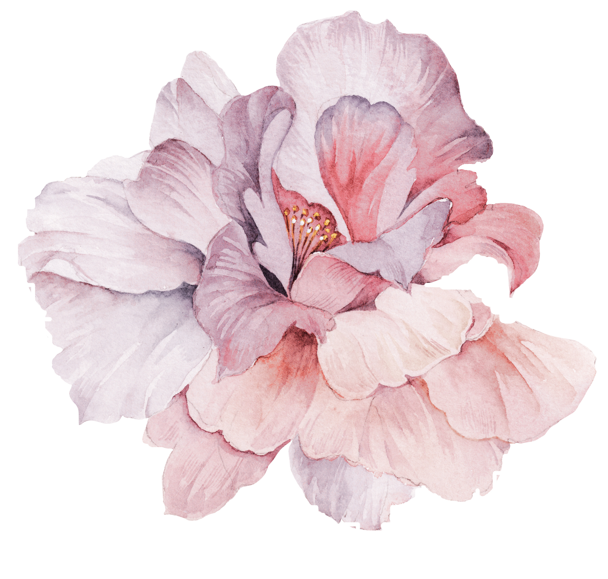
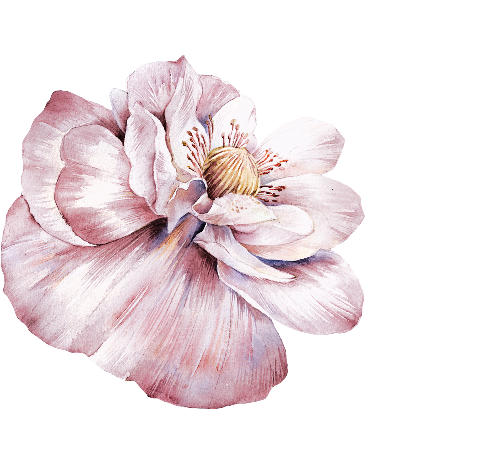

Holbein
An exquisite watercolor brand from Japan. Holbein Watercolor is a name synonymous with quality, innovation, and excellence in the world of watercolor painting. Established in Japan in the 1900s, Holbein has become a go-to brand for professional and amateur artists.